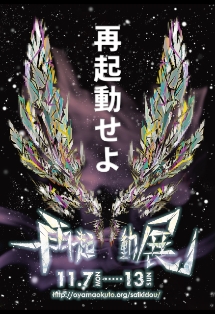
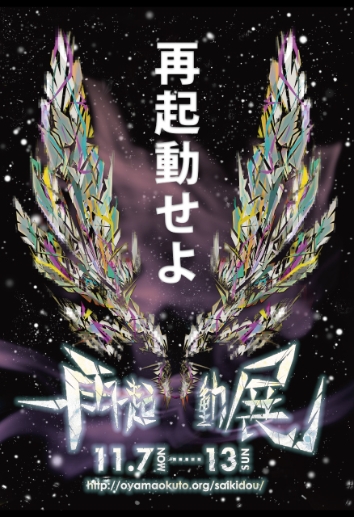

はじめに挨拶として
11月7日～13日まで開催していました再起動展にお越しいただいた皆様誠にありがとうございました。
来場者数は、おかげさまで総計170人（リピーター含め）を超える皆様方が足を運んでくださられました。
初めての個展でしたが、この規模の方々にお出でになられたのは
私としても実に驚きでもあり、同時に感謝の気持ちで一杯です。
本当にありがとうございました。
さて、今回の再起動展が主張したかった部分は、ステートメントでもあったように、
「美意識、審美眼、そして芸術観を再起動させる」というものであった。
現代アートの氾濫が招いた定義が定まらず、生産者（作家）と消費者（観覧者）の間で
深い溝のようなものができているのではないかと、私は危惧していた。
事実、私たちの中で「現代美術」とは何なのかという明確な答えは、まだ誰にも出せてはいない。
しかし万が一現代美術における明確な定義があったところで、
私たちはその定義に準ずることができるだろうか。
ならばこそ、我々は自らの中で「何が芸術なのか」「何が美しいのか」「何が新しいのか」ということを
自分自身の礎として問題提起し、考え、自分なりの解決策を提示する必要があるのでは、と私は考えた。
主体的な観点をもつことにより、
他者に影響されない芯の通った意見が確立し、自己を肯定することができる。
現代なメディア社会において主体性がぼやけてしまっている現象の歯止めになり、
動物化してしまった思考の渦から元来あったであろう「生きた」価値観を引きずり出して、
我々は改めて、文化とは、社会とは、そして我々自身は何なのかを
突き止めることができるのではないだろうか。
私が以下に書き記す総括は、
そんな再起動展のステートメントに込めたより詳細な「考え」と、
それにより導かれて欲しい私の「とある期待」、
そして再起動してこれからどうあるべきなのかを「方向性」についてである。
やかましい部分も多々あると思われるが、
私の考える再起動の必要性に改めて同意、賞賛いただける方は
是非今一度、「再起動」してもたいたい。